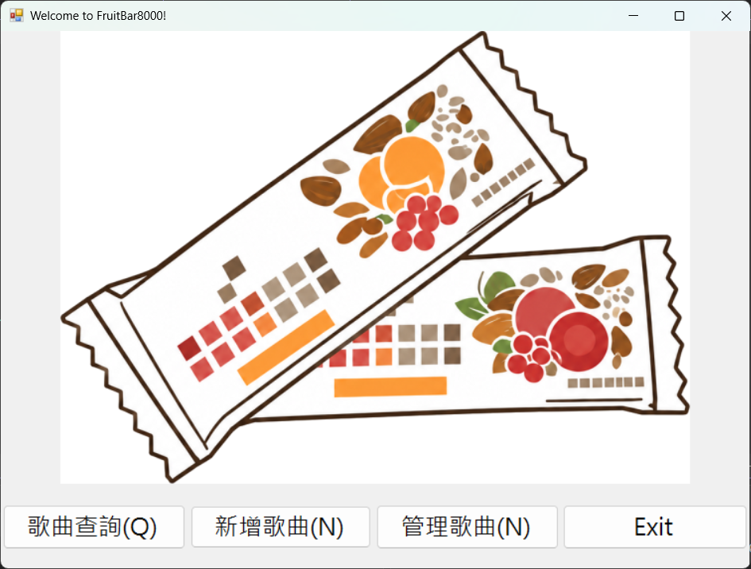
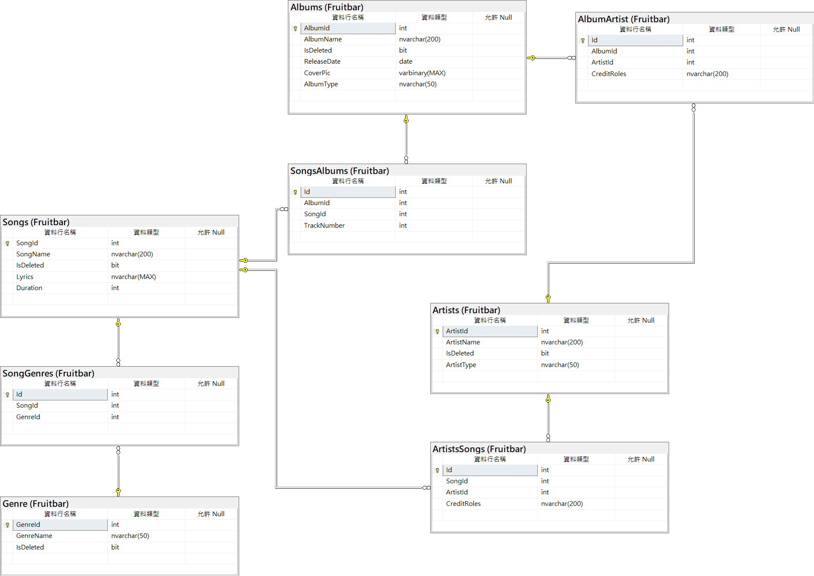

MUSIC METADATA · WINFORMS · EF6
FruitBar8000
把音樂關聯資料，整理成可維護、可擴充的查詢工具
FB
8000
01 · SCOPE
先解決「資料怎麼放、功能怎麼長」
今天的範圍很明確：
- 建模：歌曲、專輯、創作者、曲風
- 維護：新增、查詢、修改、軟刪除
- 呈現：以 WinForms 完成操作介面
先讓核心資料可信，才有條件延伸播放、封面與 Web API。

目前主畫面：查詢、新增與管理三個入口
02 · DATA MODEL
多對多關聯，才裝得下真實的音樂資料

歌曲↔創作者
ArtistsSongs
歌曲↔專輯
SongsAlbums
一首歌可有多位創作者，也可透過中介表保留角色與曲序；資料模型不必被單一情境綁死。
03 · ARCHITECTURE
分層的目的，是修改時不要牽一髮動全身
01
UI 層WinForms · 事件 · 委派
接收操作、呈現結果
↓
02
業務邏輯層Query / Add / Update / Delete Services
集中規則與 CRUD
↓
03
資料層Entity Framework 6 · EDMX · DB First
用物件關聯管理資料
UI 不直接承擔資料規則，服務也不綁死某一個畫面。
04 · QUERY DESIGN
換查詢條件，不必複製整套畫面流程
依歌曲
依專輯
依創作者
選擇方法
↓
共同入口
CallQuery(Func<string,
List<SongQueryResult>>)
↓
統一綁定
同一份結果格式
歌曲 · 專輯 · 演出／製作人員
把「方法」當參數：新增查詢類型時，保留共用的輸入判斷與 DataGridView 綁定。
05 · MAINTAINABILITY
資料安全與可遷移性，也放進第一版設計
↶
軟刪除保留資料
刪除歌曲時設定 IsDeleted = true；一般查詢主動排除，降低誤刪風險。
⇄
結構可重建、可移動
資料表規格與關聯同步保存在 dbscript/，不只存在單一資料庫環境。
06 · NEXT
從可靠的 metadata 核心，走向真正可用的音樂服務
- 01媒體連結查到歌曲後，開啟合法串流平台資訊
- 02專輯封面利用預留欄位，從介面維護封面
- 03資料匯入串接合法 metadata 來源，提升實用性
- 04Web API抽取元件、邏輯與資料架構，服務更多前端
FruitBar8000 的第一步：不是播放更多歌，而是先把每首歌的資料關係做好。